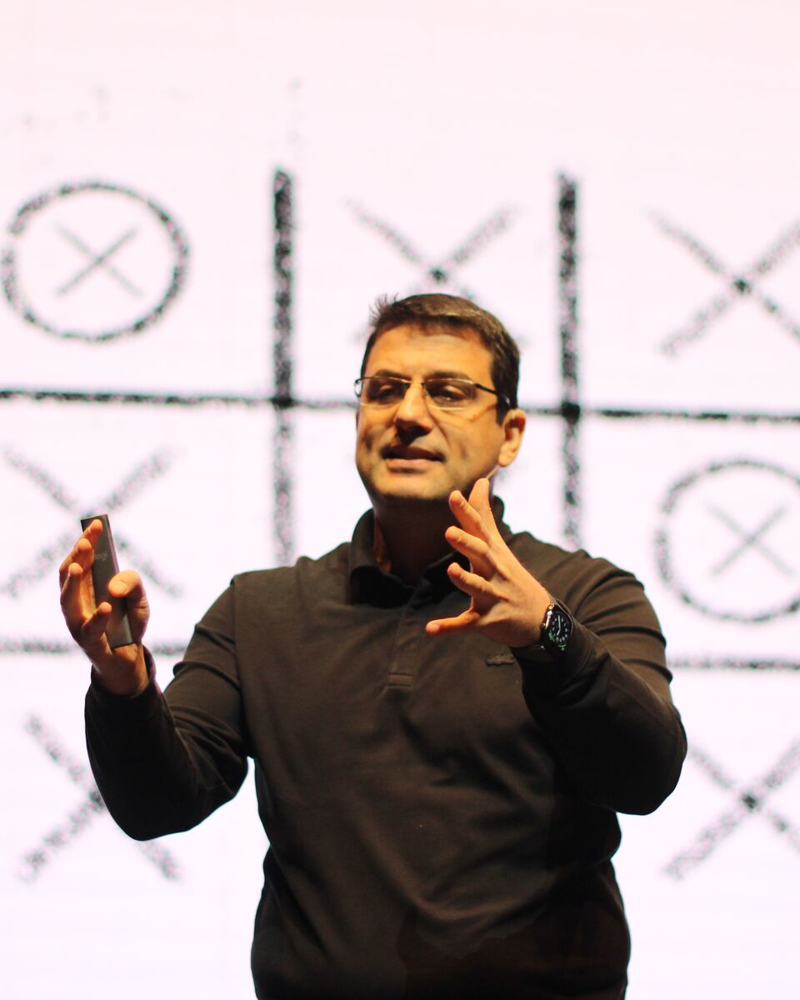

Lemi Orhan Ergin
Software crafter. Craftgate'in kurucu ortağı.
2001 yılından beri kod yazıyorum. Sony, eBay/GittiGidiyor, ACM ve iyzico'da teknik liderlik ve koçluk rollerinde çalıştım. Bugün bir ödeme orkestrasyonu platformu olan Craftgate'i geliştiriyoruz. Ben de şirketin Chief Software Crafter'ıyım. 2014 yılında Software Craftsmanship Turkey topluluğunu kurdum. İyi yazılımın nasıl yapıldığı üzerine konuşuyorum: yazılım zanaatkârlığı, ekip kültürü ve kod üretmek bu kadar ucuzlamışken hâlâ korumaya değer olan şeyler.

- Craftgate
- Craftbase
- iyzico
- ACM
- Sony
- GittiGidiyor / eBay
- Sony
- Türk Hava Kuvvetleri
- Sony
- BYM
- Marmara Üniversitesi
- TÜSSİDE
Git bir graf
2016'da Türkçe bir konuşma yaptım: Git: Not What You Think. Tek bir fikri var: her git komutu bir graf üzerinde bir hamle. Commit'ler birer düğüm; branch'ler, tag'ler ve HEAD ise onları gösteren pointer'lar. Burada gerçek git komutları çalıştırıyorsunuz. Komutları yazabilir ya da dokunarak kurabilirsiniz. Grafınız hedefe uyana kadar commit'leri ve pointer'ları taşıyorsunuz. Her bölüm benim geçmişimden bir parça. Çözdükçe beni biraz daha tanıyorsunuz.
Oyun tarayıcınızda JavaScript ile çalışıyor ama burada JavaScript kapalı. Oyunun bölümleri şunlar.
- Merhaba, 2001 main üzerinde iki commit atın. main pointer'ının ne yaptığını izleyin.
- Kopya değil, pointer sony adında bir branch açın, ona geçin ve üzerinde commit atın. main olduğu yerde kalmalı.
- İki kez ayrıldım air-force branch'ini main'e geri merge edin, sapma görünür kalsın. Fast-forward onu gizlerdi.
- Lansman günü "Public launch" commit'ine launch tag'ini koyun. Hiçbir branch'i taşımayın.
- Bir şey unuttum Yeni bir commit eklemek yerine son commit'i düzeltin.
- Düz çizgiler typofix branch'ini merge commit'i olmadan main'in üstüne taşıyın.
- Yalnızca test edilenler experiments branch'inden yalnızca test edilmiş iki commit'i main'e getirin, sıraları değişmesin.
- İkisinin de peşinden gitmedik main'i iki commit geriye taşıyın, o görüşmeler hiç olmamış gibi. Bu commit'leri henüz kimse görmedi.
- Herkesin önünde geri al main herkese açık. "Credential check" commit'ini geçmişi yeniden yazmadan geri alın.
- Hiçbir şey kaybolmaz scturkey branch'ini tam olduğu yere geri getirin ve main'de kalın. git reflog, HEAD'in nerelerde bulunduğunu hatırlar.
- Gemileri yakmak craftgate branch'inin kendi iki commit'ini services branch'inden ayırıp doğrudan main'in üstüne taşıyın. services olduğu yerde kalsın.
- Konuşmayı yayına al talk branch'ini main'in üstüne taşıyın, bir merge commit'iyle main'e merge edin, bu merge'e devoxx tag'ini koyun ve talk branch'ini silin.
Son konuşmalar
-
How AI Is Changing Our Software Development Culture Türkçe
Yapay zekâ bir ekibi dönüştürmez, onda olanı büyütür. Yazılımcıların, ekiplerin ve liderlerin rolleri değişir; güvenin de modelin dışında, testlerde ve doğrulamada kurulması gerekir.
-
When Code Becomes Disposable... Türkçe
Yapay zekâ kod yazmayı ucuzlatıyor, koda güvenmeyi zorlaştırıyor. Implementasyonun yeniden üretilebildiği, davranışın ise ayakta kaldığı rejeneratif yazılım üzerine.
-
Software Development in the Age of AI: Redefining Architecture, Quality and Culture Türkçe
Yapay zekâ çağında yazılım geliştirme: kodun kendisi ucuzladığında mimari, kalite ve mühendislik kültürü nasıl yeniden tanımlanıyor.
-
Rebirth of Software Craftsmanship in the AI Era Türkçe
Yapay zekâ yazılımcıları daha hızlı değil, daha cesur yapar. Kod ucuzladıkça zanaat doğrulamaya, domain bilgisine, modülerliğe ve kodun arkasındaki kararlara kayar.
-
Product Developer: From Writing Code to Building Products Türkçe
Yalnızca teknik sorunları değil, ürün sorunlarını da sahiplenen yazılımcılar ve ürünlerin projelerden farklı olarak neden deadline'la değil kaliteyle ölçüldüğü üzerine bir sohbet.
-
Devnot Türkiye Yazılım Sektörü 2026 Raporu Türkçe
Yapay zekâ yazılım geliştirmeyi nasıl dönüştürüyor: yazılım nereye gidiyor, ekiplerin kuruluş biçimi nasıl değişiyor.
Yıl yıl bütün konuşmalar Speaker Deck'te bütün slaytlar YouTube'da kayıtlar
Bu sitede
- BiyografiHikâyenin uzun hâli, wiki tarzında: İzmir'den İstanbul'a, 2001'den beri yazılım geliştirmek, yol boyunca tanıştığım insanlar ve yaptığım işler.
- KonuşmalarKonferanslar, meetup'lar ve üniversiteler; yıl yıl ve harita üzerinde, slaytları ve kayıtlarıyla.
- CraftgateKurduğumuz ödeme orkestrasyonu şirketi: nasıl başladı, bugün nerede.
- Kariyer2001'den beri çalıştığım pozisyonlar, git log olarak çizilmiş.
- ToplulukSoftware Craftsmanship Turkey, Agile Turkey ve manifesto çevirileri.
- PaylaşımlarHerkese açık paylaştığım her şey: kod, kayıtlar, podcast, slaytlar, yazılar ve hesaplarım.
- Personal ZenHayatıma ve işime yön veren prensipler. İlk kez 2017'de çocuklarım için yazdım, her birinin bir kömür kalem çizimi var.
- macOS root açığı2017'de Twitter'da Apple'a, herkesin bir Mac'te root olarak giriş yapabildiğini bilip bilmediğini sorduğum gece. Düzeltme ertesi gün geldi. Burada hikâyesi, basında çıkanlar ve bu olaydan öğrendiklerim var.
- SumoSumoya Türkçe bir giriş: kurallar, altı lig, yokozunadan maegashiraya seviyeler, yılda altı turnuva ve sevdiğim iki güreşçi, Hakuhō ile Ura.
- İletişimKonuşma, podcast ve topluluk etkinlikleri için.